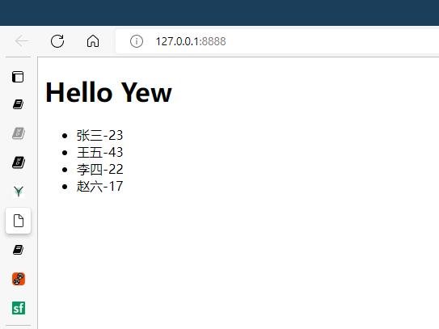

这是 Yew 编程笔记文档
Yew 的官网地址 yew.rs.
使用 Yew 的步骤
- 安装 trunk
- 添加 yew 依赖
- 设置构建目标
第一个 Yew 例子
依赖安装
[package]
name = "yew-app"
version = "0.1.0"
edition = "2021"
# See more keys and their definitions at https://doc.rust-lang.org/cargo/reference/manifest.html
[dependencies]
yew = "0.19"
src/main.rs
use yew::prelude::*;
#[function_component(App)]
fn app() -> Html {
html! {
<h1>{ "Hello World" }</h1>
}
}
fn main() {
yew::start_app::<App>();
}
在项目根目录创建 index.html
<!DOCTYPE html>
<html lang="en">
<head> </head>
<body></body>
</html>
启动开发服务器
trunk serve --open --port 8888
在 rust 中写 html
要在 rust 写 html 需要用到 html! {} 宏，例子如下：
html! {
<>
<h1>{ "RustConf Explorer" }</h1>
<div>
<h3>{"Videos to watch"}</h3>
<p>{ "John Doe: Building and breaking things" }</p>
<p>{ "Jane Smith: The development process" }</p>
<p>{ "Matt Miller: The Web 7.0" }</p>
<p>{ "Tom Jerry: Mouseless development" }</p>
</div>
<div>
<h3>{ "John Doe: Building and breaking things" }</h3>
<img src="https://via.placeholder.com/640x360.png?text=Video+Player+Placeholder" alt="video thumbnail" />
</div>
</>
}
在 rust 的 html! 宏中只能有一个根节点，所以需要用 <> 作为空节点。
用 rust 构建 html 中需要的元素
use gloo::console::log;
use yew::prelude::*;
#[derive(Properties, PartialEq)]
struct MyObject {
username: String,
age: u32,
}
#[function_component(App)]
pub fn app() -> Html {
let mut users = vec![
MyObject {
username: "张三".to_string(),
age: 23,
},
MyObject {
username: "王五".to_string(),
age: 43,
},
MyObject {
username: "李四".to_string(),
age: 22,
},
MyObject {
username: "赵六".to_string(),
age: 17,
},
];
let users = users
.iter()
.map(|user| {
html! {
<li>{user.username.to_string()} {"-"} {user.age}</li>
}
})
.collect::<Html>();
html! {
<>
<h1 class="title">{"Hello Yew"}</h1>
<ul>{users}</ul>
</>
}
}
